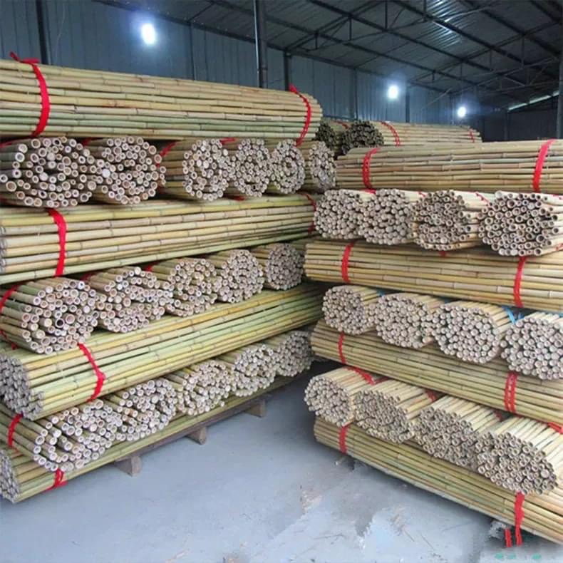
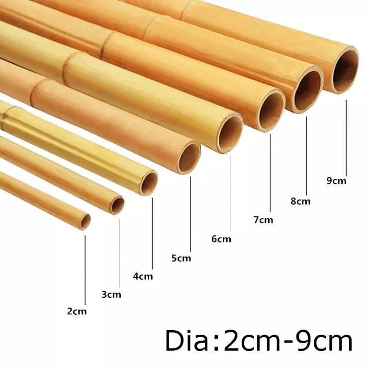
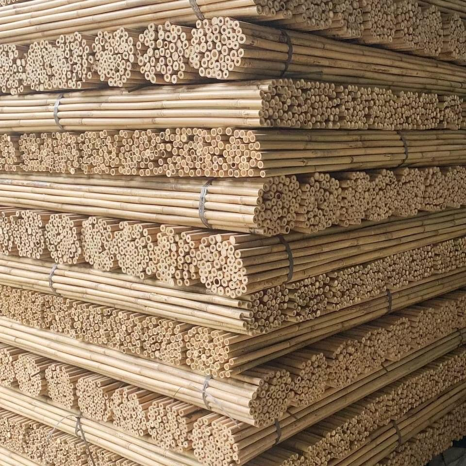
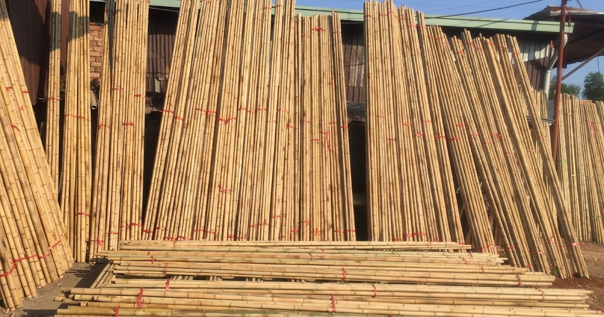
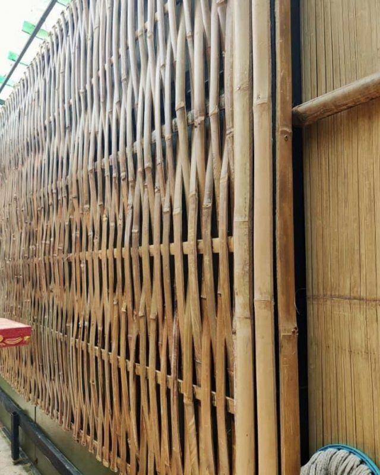
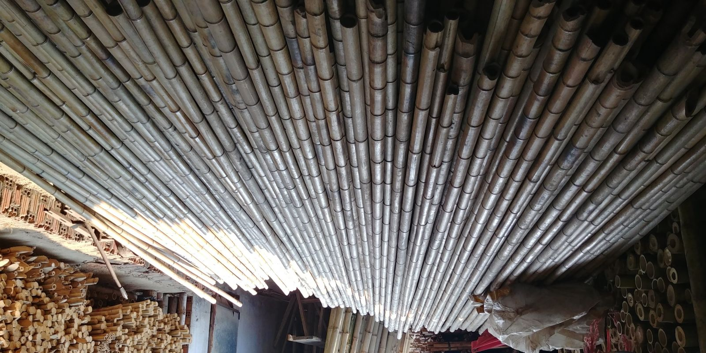

Thông tin dự án
- Đư
- ợc cam kết về chất lượng sản phẩm. Mua nguyên liệu tre trúc khô tại Tre việtsẽ được xử lý mối mọt kỹ lưỡng, đảm bảo sản phẩm ở mức tốt nhất.
- Đư
- ợc mua sản phẩm với giá tốt nhất thị trường bởi tre việt là kho cung cấp nguyên liệu lớn, không qua bất kỳ khâu trung gian nào.
- Nơi
- cung cấp nguyên liệu tre trúc khô quy mô lớn tại nhiều tỉnh thành.
- Đ
- a dạng về các sản phẩm làm từ tre trúc.
- Hỗ
- trợ vận chuyển hàng hóa tận nơi cho khách hàng với thời gian nhanh nhất.
- Dịch v
- ụ bán hàng chuyên nghiệp, hỗ trợ giải đáp toàn bộ thắc mắc về sản phẩm dành cho khách hàng.
- C
- húng tôi phục vụ khách hàng nhỏ, lẻ khi có nhu cầu.
cây trúc trang trí giá rẻ
Nguyên liệu tre trúc khô được ứng dụng nhiều trong xây dựng nhà cửa, trang trí nội thất,… Vậy giá bán tre trúc khô là bao nhiêu, ưu điểm của loại nguyên liệu này ra sao và địa chỉ mua tre trúc khô ở đâu uy tín chất lượng? Mời bạn cùng kỹ thuật tre việt nam tìm hiểu về loại nguyên liệu này thông qua bài viết bên dưới đây nhé!
1. Giá bán tre trúc khô trang trí tại TPHCM
Tùy thuộc vào số lượng, quy cách nơi nhận hàng mà giá bán tre trúc khô sẽ có sự khác nhau giữa từng đơn vị cung cấp.

Giá tre trúc khô sẽ phù thuộc vào đơn vị cung cấp khác nhau.
Bạn có thể nhận báo giá nguyên liệu tre trúc khô thông qua trang web Tre Việt hoặc liên hệ trực tiếp qua số hotline 0909.69.72.89.
2. Nguyên liệu tre trúc khô
Từ xưa đến nay hình ảnh cây trúc được xem là biểu tượng cao quý và những đức tính tốt đẹp của người Việt Nam. Với sự cứng chắc, bền bỉ mà cây trúc đã được người dân Việt sử dụng làm nhà cửa, đồ dùng trong gia đình hay trong sản xuất công/nông nghiệp. Không những thế, theo quan niệm tâm linh phong thủy thì cây trúc là một trong những loại cây tứ quý mang lại nhiều may mắn cho người sử dụng.
Tre trúc được xem là loại cây bền bỉ so với những loại thân cây khác.
Về đặc điểm, tre trúc thường là loại cây mọc thành từng bụi. Tre là loại cây có thân to hơn so với trúc. Lá tre mọc san sát còn lá trúc mọc thưa và cành của 2 loại cây này mềm mại uyển chuyển.
- Ưu điểm của cây trúc khô
Nguyên liệu tre trúc khô trang trí sẽ được gia công uốn thẳng, chống mối mọt kỹ với đường kính phổ biến từ 2 – 5 cm; chiều dài từ 2m – 2,5m – 3m và 4m. Mang màu sắc vàng ngà cổ điển, tre trúc khô tạo nên độ thẩm mỹ cao trong trang trí ốp tường, ốp trần, làm hàng rào,…
So với những loại cây thân gỗ khác thì tre trúc có đặc tính cơ học cao gấp 3 lần. Đây là loại cây có khả năng chịu lực tốt, dẻo dai nên có thể dễ dàng tạo hình uốn lượn theo nhiều kiểu dáng khác nhau.

Tre trúc khô mang nhiều ưu điểm vượt trội.
Cây trúc khô ít chịu tác động bởi yếu tố thời tiết. Khả năng chống mối mọt, chống cong vênh, ẩm mọc rất tốt.
Cây trúc không hấp thụ nhiệt nên có thể sử dụng làm vật cách nhiệt, tạo nên cảm giác mát mẻ trong lành cho không gian sống và làm việc.
Trọng lượng cây tre trúc khô cũng khá nhẹ nên dễ di chuyển và việc thi công lắp đặt cũng trở nên dễ dàng, ít tốt thời gian, nhân công và sức lực hơn.
So với những loại nguyên liệu khác thì giá cả nguyên liệu tre trúc khô cũng rẻ hơn, giúp tiết kiệm đến 3 – 4 lần.
3. Ứng dụng cây tre trúc khô trong đời sống
Trong xây dựng kiến trúc, nguyên liệu tre trúc khô có thể được ứng dụng làm ốp tường, ốp trần, ốp vách, ốp trụ cột, hàng rào cho các công trình như nhà, quán ăn, quán cà phê, khu nghỉ dưỡng, resort,… Tre trúc khô còn ứng dụng làm bàn, tủ, giường, kệ,… trang trí cho không gian sống và làm việc của bạn thêm sinh động, hòa nhập với thiên nhiên.

Nguyên liệu tre trúc khô được ứng dụng làm cổng và hàng rào độc đáo.

Tre trúc khô dùng làm ốp tường, ốp vách ngăn mang tính thẩm mỹ cao.
Ngoài ra, nguyên liệu tre trúc khô còn được ứng dụng trong sản xuất đồ thủ công mỹ nghệ như rổ, mẹt trúc, giỏ trúc, đồ lưu niệm, trang trí,… mang đầy ý nghĩa và độc đáo.
4. Mua nguyên liệu tre trúc khô ở đâu tại TPHCM uy tín, chất lượng?
Được xem là một trong những đơn vị hàng đầu trong việc cung cấp nguyên liệu tre trúc khô tại TPHCM, Tre việt sẽ là nơi uy tín và đảm bảo chất lượng để cung cấp nguyên liệu cho các công trình xây dựng hàng rào, trang trí nội thất,… với số lượng lớn.

Dự án thi công trang trí tre trúc nhà hàng Mười Dễ.
Đến với Tre việt bạn sẽ nhận được những lợi ích nổi bật và được đảm bảo tuyệt đối về quyền lợi của mình. Cụ thể như:
Những thông tin bên trên phần nào đã giúp bạn hiểu rõ hơn về nguyên liệu tre trúc khô cũng như lựa chọn mua loại nguyên liệu này ở đâu là tốt nhất. Quý khách có nhu cầu mua nguyên liệu tre trúc khô hay muốn giải đáp các vấn đề thắc mắc về sản phẩm có thể liên hệ trực tiếp cho chúng tôi thông qua hotline 087.992.7333để được hỗ trợ miễn phí nhé!
Nếu bạn yêu thích không gian sống mộc mạc, thoáng đãng; địa điểm kinh doanh ấn tượng và gần gũi thiên nhiên. Hãy đến ngay với Kỹ thuật tre Việt Nam để được tư vấn kỹ thuật thi công tre trúc nhà hàng bạn nhé!
Kỹ thuật Tre Việt – Cùng Thiên Nhiên kiến tạo cuộc sống hạnh phúc
Thông tin liên hệ:
CÔNG TY TRÁCH NHIỆM HỮU HẠN TRE VIỆT
BUILDING
Địa chỉ: 917 Phạm Văn Đồng, Phường Linh Xuân, Thành phố
Hồ Chí Minh
Nhà máy sản xuất: Phú Hợp B, Xã Phú Lâm, Đồng Nai.
Website: tretruc.com.vn
Điện thoại – Zalo: 093.123.5757
Email: info@treviet.com.vn – treviet23@gmail.com